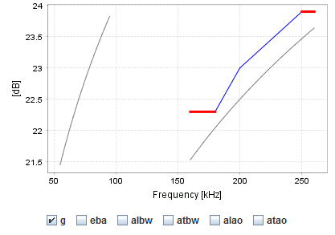

This view plots the frequency-dependent
broadband calibration
specified in the file calibration.xml and the default
correction formulae.
The plot is updated when the mouse is moved and shows the calibration for the corresponding ping. The figure below shows an example plot where:
